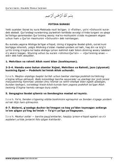

QKQur'oni Karimning o'zbek tilidagi to'liq tarjimasi va izohlari.
Bu kitob Qur'oni Karimning Alouddin Mansur tomonidan o'zbek tiliga qilingan tarjimasidir. Har bir sura va oyat izohlar bilan birga berilgan bo'lib, mo'minlar, kofirlar va munofiqlar haqidagi ta'limotlar, ibodat va axloq qoidalari bayon etilgan. Fotiha surasi va Baqara surasi kabi asosiy suralar batafsil sharhlangan.